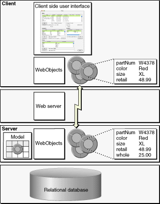

| PATH |

Figure 6-7 shows the flow of data between the client and server applications for the Java Client architecture.
Starting in the upper left of the diagram and working down, when the client application initiates a fetch, the client application forwards the corresponding fetch specification to the server application. From there the normal mechanisms take over and an SQL query is performed in the database server.
Working back up the diagram on the right side, the database server returns the rows of requested data and, as usual, this data is converted to enterprise objects. The server then sends copies of the requested objects to the client. When the client receives the objects, it updates its user interface with values from the requested objects.
Figure 6-7 Data flow in a Java Client application
Although requested objects are copied from the server to the client, and these objects exist in parallel object graphs on both server and client, the enterprise objects on the client usually do not exactly mirror the enterprise objects on the server. The objects on the client usually have a subset of the properties of the objects on the server. You can partition your application's enterprise objects so the objects that exist on the client have a restricted set of data and behaviors. This ability allows you to restrict sensitive data and business logic to the server. For example, in Figure 6-7, the client side enterprise objects don't have the "whole" property, the price the seller paid to the manufacturer.
Once the client has fetched data, this data is cached and is represented internally by the client's object graph. As users modify the data (or delete or add "rows" of data), the client application updates the client's object graph to reflect the new state. When the client application initiates a save, the changed objects are "pushed" to the server. If the business logic on the server validates these changes, the changes are committed to the database.
Note that Java Client automatically updates the client with changes that have occurred on the server. Whenever the client makes a request, the server passes updates along to the client with whatever information the client requested. Similarly, Java Client has the opportunity to update the client before client-side objects remotely invoke methods on server-side objects.